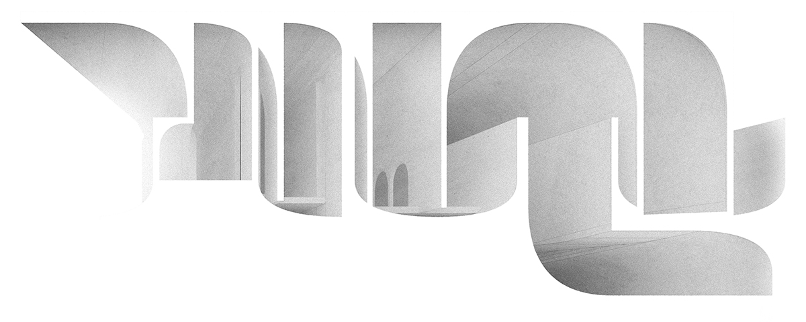
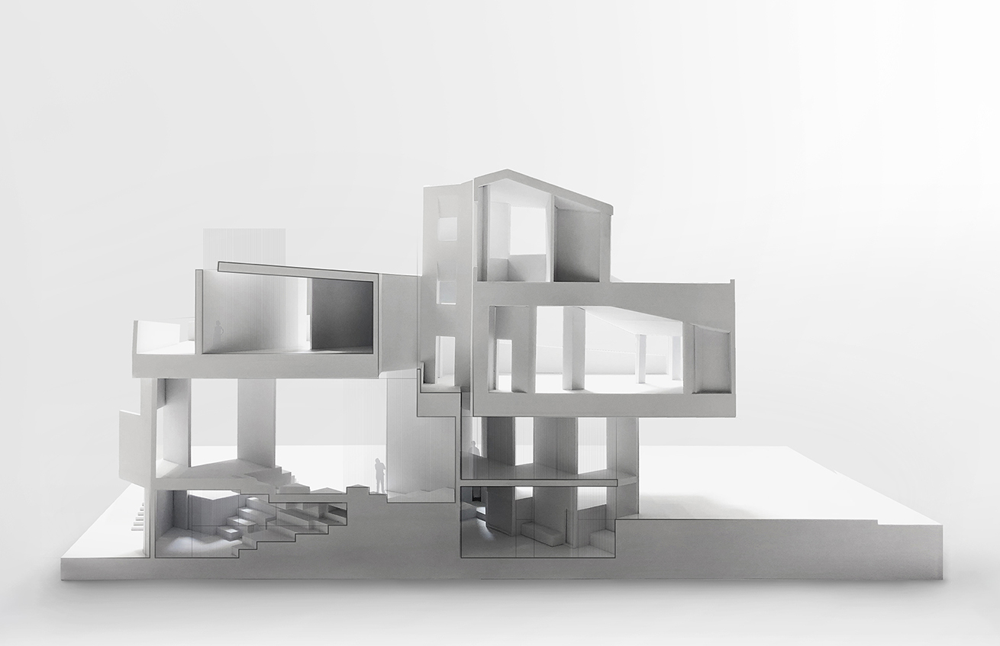

Living in Edinburgh exposed me to a balanced
phenomenological identity within centuries of stacked environments.
I called this place my home and grew accustomed to roaming the urban
infrastructure. Sights, smells, and all items experiential gave me an
ideal view of the living environment, and the city became my
playground. I moved to the Denver suburbs, and my new friends found my
childhood alien. Travelling with my parents meant by car, and minutes
became miles. For the first time, I was a stranger to the city and
lost my sense of place.
During my undergraduate development, the morphological coherence within Christopher Alexander’s pattern theory brought understanding to my childhood experiences while the communal design of Unite d’Habitation built half a century ago guided my thoughts on place. A harmony naturally existed between the people that formed to create the first settlements, yet presently this social congruity is severely affected through artificial segregation.

During my undergraduate development, the morphological coherence within Christopher Alexander’s pattern theory brought understanding to my childhood experiences while the communal design of Unite d’Habitation built half a century ago guided my thoughts on place. A harmony naturally existed between the people that formed to create the first settlements, yet presently this social congruity is severely affected through artificial segregation.
The role of the
built environment is to create intersections of community to
maintain the human experience. While not necessarily intended to
break down any barriers, the phenomena of place offer a return to an
a priori sodality. I was inspired by the chaotic rush of
construction underlaying much of China’s growth in the early 21st
Century, yet the casual efficiency in which historic neighborhoods
were demolished soured this rush to modernize. In developing under
the centrally planned model of soviet-era modernity, many cities
have lost the personal connections, the human scaled environments
and the intimate communities.

Rejecting the developments of the modern era, the offices I worked for
followed an ethos closer to the historical Eastern philosophy of a
natural harmony. The qualities of form speak more to an ontological
debate on placemaking rather than an allusion to any natural
landscape. The formal experiments produced by me and my peers belies a
philosophical rebellion towards the urban ennui of the past
century. Beijing offered me opportunities to discover the
trappings of faulty planning and I began questioning the
architect’s role in enabling this degradation of the urban
environment.
Rather than stay a passive responder to an ecological crisis, I wish to foster a proactive and engaging architectural environment that offers solutions to problems yet unasked. The richness of historical exploration that can be found in our urban cities reminds me of my childhood adventures across Edinburgh. I am drawn to the sustainable initiatives undertaken by many leading cities today, and growing up within this tumultuous generation, I hold an acute awareness of the issues concerning urbanization and ecology. The era we live in demands solutions to yesterday's ecological problems and I believe architects can offer effective yet enriching methods to our built environment.
Rather than stay a passive responder to an ecological crisis, I wish to foster a proactive and engaging architectural environment that offers solutions to problems yet unasked. The richness of historical exploration that can be found in our urban cities reminds me of my childhood adventures across Edinburgh. I am drawn to the sustainable initiatives undertaken by many leading cities today, and growing up within this tumultuous generation, I hold an acute awareness of the issues concerning urbanization and ecology. The era we live in demands solutions to yesterday's ecological problems and I believe architects can offer effective yet enriching methods to our built environment.